Chapter 24: Fungi¶
Introduction¶
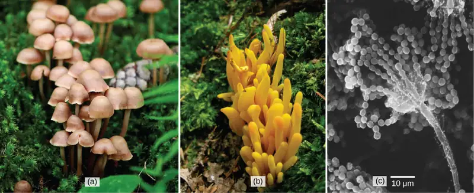
The word fungus comes from the Latin word for mushrooms. Indeed, the familiar mushroom is a reproductive structure used by many types of fungi. However, there are also many fungus species that don't produce mushrooms at all. Being eukaryotes, a typical fungal cell contains a true nucleus and many membrane-bound organelles. The kingdom Fungi includes an enormous variety of living organisms. While scientists have identified about 135,000 species of fungi, this is only a fraction of the more than 1.5 million species of fungus likely present on Earth. Edible mushrooms, yeasts, black mold, and the producer of the antibiotic penicillin, Penicillium notatum, are all members of the kingdom Fungi, which belongs to the domain Eukarya.
24.1 Characteristics of Fungi¶
Learning Objectives
By the end of this section, you will be able to do the following:
- List the characteristics of fungi
- Describe the composition of the mycelium
- Describe the mode of nutrition of fungi
- Explain sexual and asexual reproduction in fungi
Fungi, once considered plant-like organisms, are more closely related to animals than plants. Fungi are not capable of photosynthesis: they are heterotrophic because they use complex organic compounds as sources of energy and carbon. Fungi share a few other traits with animals. Their cell walls are composed of chitin, which is found in the exoskeletons of arthropods. Fungi produce a number of pigments, including melanin, also found in the hair and skin of animals. Like animals, fungi also store carbohydrates as glycogen. However, like bacteria, fungi absorb nutrients across the cell surface and act as decomposers, helping to recycle nutrients by breaking down organic materials to simple molecules.
Some fungal organisms multiply only asexually, whereas others undergo both asexual reproduction and sexual reproduction with alternation of generations. Most fungi produce a large number of spores, which are haploid cells that can undergo mitosis to form multicellular, haploid individuals.
Fungi often interact with other organisms, forming beneficial or mutualistic associations. For example, most terrestrial plants form symbiotic relationships with fungi. The roots of the plant connect with the underground parts of the fungus, which form mycorrhizae. Through mycorrhizae, the fungus and plant exchange nutrients and water, greatly aiding the survival of both species. Alternatively, lichens are an association between a fungus and its photosynthetic partner (usually an alga).
Fungi also cause serious infections in plants and animals. For example, Dutch elm disease, which is caused by the fungus Ophiostoma ulmi, is a particularly devastating type of fungal infestation that destroys many native species of elm (Ulmus sp.) by infecting the tree’s vascular system. The elm bark beetle acts as a vector, transmitting the disease from tree to tree. Accidentally introduced in the 1900s, the fungus decimated elm trees across the continent. Many European and Asiatic elms are less susceptible to Dutch elm disease than American elms.
In humans, fungal infections are generally considered challenging to treat. Unlike bacteria, fungi do not respond to traditional antibiotic therapy, since they are eukaryotes. Fungal infections may prove deadly for individuals with compromised immune systems.
Fungi have many commercial applications. The food industry uses yeasts in baking, brewing, and cheese and wine making. Many industrial compounds are byproducts of fungal fermentation. Fungi are the source of many commercial enzymes and antibiotics.
Although humans have used yeasts and mushrooms since prehistoric times, until recently, the biology of fungi was poorly understood. In fact, up until the mid-20th century, many scientists classified fungi as plants! Fungi, like plants, are mostly sessile and seemingly rooted in place. They possess a stem-like structure similar to plants, as well as having a root-like fungal mycelium in the soil. In addition, their mode of nutrition was poorly understood. Progress in the field of fungal biology was the result of mycology: the scientific study of fungi. Based on fossil evidence, fungi have been found in the Devonian era, about 410 million years ago. However, new findings might place the appearance of the first fungi during the Neoproterozoic era, about 900 million years ago. Molecular biology analysis of the fungal genome demonstrates that fungi are more closely related to animals than plants. Under some current systematic phylogenies, they continue to be a monophyletic group of organisms.
Career Connection: Mycologist
Mycologists are biologists who study fungi. Historically, mycology was a branch of microbiology, and many mycologists start their careers with a degree in microbiology. To become a mycologist, a bachelor's degree in a biological science (preferably majoring in microbiology) and a master's degree in mycology are minimally necessary. Mycologists can specialize in taxonomy and fungal genomics, molecular and cellular biology, plant pathology, biotechnology, or biochemistry. Some medical microbiologists concentrate on the study of infectious diseases caused by fungi, called mycoses. Mycologists collaborate with zoologists and plant pathologists to identify and control difficult fungal infections, such as the devastating chestnut blight, the mysterious decline in frog populations in many areas of the world, or the deadly epidemic called white nose syndrome, which is decimating bats in the Eastern United States.
Government agencies hire mycologists as research scientists and technicians to monitor the health of crops, national parks, and national forests. Mycologists are also employed in the private sector by companies that develop chemical and biological control products or new agricultural products, and by companies that provide disease control services. Because of the key role played by fungi in the fermentation of alcohol and the preparation of many important foods, scientists with a good understanding of fungal physiology routinely work in the food technology industry. Oenology, the science of wine making, relies not only on the knowledge of grape varietals and soil composition, but also on a solid understanding of the characteristics of the wild yeasts that thrive in different wine-making regions. It is possible to purchase yeast strains isolated from specific grape-growing regions. The great French chemist and microbiologist, Louis Pasteur, made many of his essential discoveries working on the humble brewer’s yeast, thus discovering the process of fermentation.
Cell Structure and Function¶
Fungi are eukaryotes, and as such, have a complex cellular organization. As eukaryotes, fungal cells contain a membrane-bound nucleus. The DNA in the nucleus is represented by multiple linear molecules wrapped around histone proteins, as is observed in other eukaryotic cells. A few types of fungi have accessory genomic structures comparable to bacterial plasmids (loops of DNA); however, the horizontal transfer of genetic information that occurs between one bacterium and another rarely occurs in fungi. Fungal cells also contain mitochondria and a complex system of internal membranes, including the endoplasmic reticulum and Golgi apparatus.
Unlike plant cells, fungal cells do not have chloroplasts or chlorophyll. Many fungi display bright colors arising from other cellular pigments, ranging from red to green to black. The poisonous Amanita muscaria (fly agaric) is recognizable by its bright red cap with white patches (Figure 24.2). Pigments in fungi are associated with the cell wall and play a protective role against ultraviolet radiation. Some fungal pigments are toxic to humans.
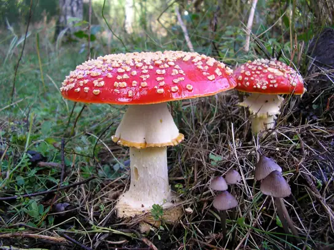
Like plant cells, fungal cells have a thick cell wall. The rigid layers of fungal cell walls contain complex polysaccharides called chitin and glucans. Chitin (N-acetyl-D-glucosamine), also found in the exoskeleton of arthropods such as insects, gives structural strength to the cell walls of fungi. The wall provides structural support and protects the cell from desiccation and some predators. Fungi have plasma membranes similar to those of other eukaryotes, except that the structure is stabilized by ergosterol: a steroid molecule that replaces the cholesterol found in animal cell membranes. Most members of the kingdom Fungi are nonmotile. However, flagella are produced by the spores and gametes in the primitive Phylum Chytridiomycota.
Growth¶
The vegetative body of a fungus is a unicellular or multicellular thallus. Unicellular fungi are called yeasts. Multicellular fungi produce threadlike hyphae (singular hypha). Dimorphic fungi can change from the unicellular to multicellular state depending on environmental conditions. Saccharomyces cerevisiae (baker’s yeast) and Candida species (the agents of thrush, a common fungal infection) are examples of unicellular fungi (Figure 24.3).
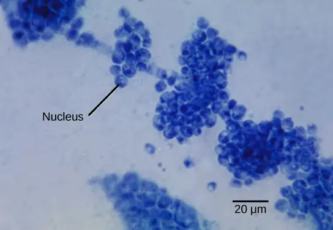
Most fungi are multicellular organisms. They display two distinct morphological stages: the vegetative and reproductive. The vegetative stage consists of a tangle of hyphae, whereas the reproductive stage can be more conspicuous. The mass of hyphae is a mycelium (Figure 24.4). It can grow on a surface, in soil or decaying material, in a liquid, or even on living tissue. Although individual hyphae must be observed under a microscope, the mycelium of a fungus can be very large, with some species truly being “the fungus humongous.” The giant Armillaria solidipes (honey mushroom) is considered the largest organism on Earth, spreading across more than 2,000 acres of underground soil in eastern Oregon; it is estimated to be at least 2,400 years old.
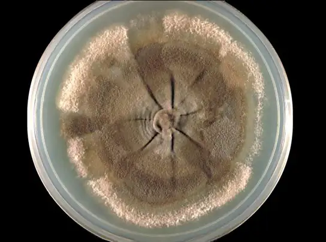
Most fungal hyphae are divided into separate cells by endwalls called septa (singular, septum) (Figure 24.5a, c). In most phyla of fungi, tiny holes in the septa allow for the rapid flow of nutrients and small molecules from cell to cell along the hypha. They are described as perforated septa. The hyphae in bread molds (which belong to the Phylum Zygomycota) are not separated by septa. Instead, they are formed by large cells containing many nuclei (multinucleate), an arrangement described as coenocytic hyphae (Figure 24.5b).
![Part A is an illustration of septated hyphae. Cells within the septated hyphae are rectangular. Each cell has its own nucleus, and connects to other cells end to end in a long strand. Two branches occur in the hyphae. Part B is an illustration of coenocytic hyphae. Like the septated hyphae, the coenocytic hyphae consist of long, branched fibers. However, in coenocytic hyphae, there is no separation between the cells or nuclei. Part C is a light micrograph of septated hyphae from Phialophora richardsiae. The hyphae consists of a long chain of cells with multiple branches. Each branch is about 3 microns wide and varies from 3 to 20 microns in length.](img/figure-24-01-04abcf.webp)
Fungi thrive in environments that are moist and slightly acidic, and can grow in dark places or places exposed to light. They vary in their oxygen requirement. Most fungi are obligate aerobes, requiring oxygen to survive. Other species, such as members of the Chytridiomycota that reside in the rumen of cattle, are obligate anaerobes, in that they only use anaerobic respiration because oxygen will disrupt their metabolism or kill them. Yeasts are intermediate, being facultative anaerobes. This means that they grow best in the presence of oxygen using aerobic respiration, but can survive using anaerobic respiration when oxygen is not available. The alcohol produced from yeast fermentation is used in wine and beer production.
Nutrition¶
Like animals, fungi are heterotrophs; they use complex organic compounds as a source of carbon, rather than fix carbon dioxide from the atmosphere as do some bacteria and most plants. In addition, fungi do not fix nitrogen from the atmosphere. Like animals, they must obtain it from their diet. However, unlike most animals, which ingest food and then digest it internally in specialized organs, fungi perform these steps in the reverse order; digestion precedes ingestion. First, exoenzymes are transported out of the hyphae, where they process nutrients in the environment. Then, the smaller molecules produced by this external digestion are absorbed through the large surface area of the mycelium. As with animal cells, the polysaccharide of storage is glycogen, a branched polysaccharide, rather than amylopectin, a less densely branched polysaccharide, and amylose, a linear polysaccharide, as found in plants.
Fungi are mostly saprobes (saprophyte is an equivalent term): organisms that derive nutrients from decaying organic matter. They obtain their nutrients from dead or decomposing organic material derived mainly from plants. Fungal exoenzymes are able to break down insoluble compounds, such as the cellulose and lignin of dead wood, into readily absorbable glucose molecules. The carbon, nitrogen, and other elements are thus released into the environment. Because of their varied metabolic pathways, fungi fulfill an important ecological role and are being investigated as potential tools in bioremediation of chemically damaged ecosystems. For example, some species of fungi can be used to break down diesel oil and polycyclic aromatic hydrocarbons (PAHs). Other species take up heavy metals, such as cadmium and lead.
Some fungi are parasitic, infecting either plants or animals. Smut and Dutch elm disease affect plants, whereas athlete’s foot and candidiasis (thrush) are medically important fungal infections in humans. In environments poor in nitrogen, some fungi resort to predation of nematodes (small non-segmented roundworms). In fact, species of Arthrobotrys fungi have a number of mechanisms to trap nematodes: One mechanism involves constricting rings within the network of hyphae. The rings swell when they touch the nematode, gripping it in a tight hold. The fungus then penetrates the tissue of the worm by extending specialized hyphae called haustoria. Many parasitic fungi possess haustoria, as these structures penetrate the tissues of the host, release digestive enzymes within the host's body, and absorb the digested nutrients.
Reproduction¶
Fungi reproduce sexually and/or asexually. Some fungi reproduce both sexually and asexually, while other fungi reproduce only asexually (by mitosis).
In both sexual and asexual reproduction, fungi produce spores that disperse from the parent organism by either floating on the wind or hitching a ride on an animal. Fungal spores are smaller and lighter than plant seeds. For example, the giant puffball mushroom bursts open and releases trillions of spores in a massive cloud of what looks like finely particulate dust. The huge number of spores released increases the likelihood of landing in an environment that will support growth (Figure 24.6).
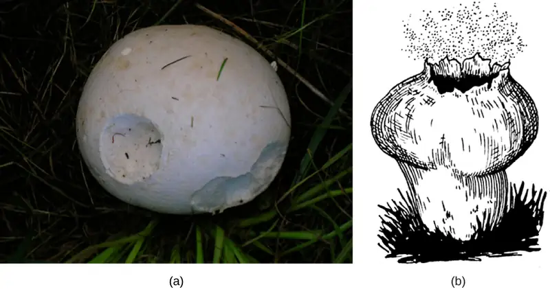
Asexual Reproduction¶
Fungi reproduce asexually by fragmentation, budding, or producing spores. Fragments of hyphae can grow new colonies. Somatic cells in yeast form buds. During budding (an expanded type of cytokinesis), a bulge forms on the side of the cell, the nucleus divides mitotically, and the bud ultimately detaches itself from the mother cell (Figure 24.7).
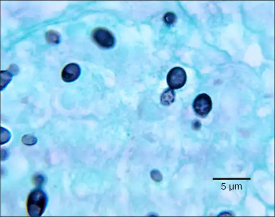
The most common mode of asexual reproduction is through the formation of asexual spores, which are produced by a single individual thallus (through mitosis) and are genetically identical to the parent thallus (Figure 24.8). Spores allow fungi to expand their distribution and colonize new environments. They may be released from the parent thallus either outside or within a special reproductive sac called a sporangium.
![The asexual and sexual stages of reproduction of fungi are shown. In the asexual life cycle, a haploid (1n) mycelium undergoes mitosis to form spores. Germination of the spores results in the formation of more mycelia. In the sexual life cycle, the mycelium undergoes plasmogamy, a process in which haploid cells fuse to form a heterokaryon (a cell with two or more haploid nuclei). This is called the heterokaryotic stage. The dikaryotic cells (cells with two more more nuclei) undergo karyogamy, a process in which the nuclei fuse to form a diploid (2n) zygote. The zygote undergoes meiosis to form haploid (1n) spores. Germination of the spores results in the formation of a multicellular mycelium.](img/figure-b24-01-07.webp)
There are many types of asexual spores. Conidiospores are unicellular or multicellular spores that are released directly from the tip or side of the hypha. Other asexual spores originate in the fragmentation of a hypha to form single cells that are released as spores; some of these have a thick wall surrounding the fragment. Yet others bud off the vegetative parent cell. In contrast to conidiospores, sporangiospores are produced directly from a sporangium (Figure 24.9).
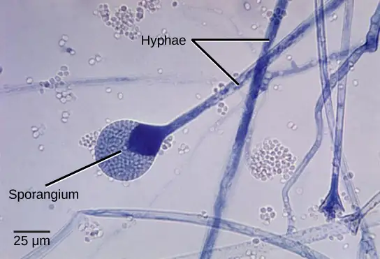
Sexual Reproduction¶
Sexual reproduction introduces genetic variation into a population of fungi. In fungi, sexual reproduction often occurs in response to adverse environmental conditions. During sexual reproduction, two mating types are produced. When both mating types are present in the same mycelium, it is called homothallic, or self-fertile. Heterothallic mycelia require two different, but compatible, mycelia to reproduce sexually.
Although there are many variations in fungal sexual reproduction, all include the following three stages (Figure 24.8). First, during plasmogamy (literally, “marriage or union of cytoplasm”), two haploid cells fuse, leading to a dikaryotic stage where two haploid nuclei coexist in a single cell. During karyogamy (“nuclear marriage”), the haploid nuclei fuse to form a diploid zygote nucleus. Finally, meiosis takes place in the gametangia (singular, gametangium) organs, in which gametes of different mating types are generated. At this stage, spores are disseminated into the environment.
Interactive
Review the characteristics of fungi by watching this video.
24.2 Classifications of Fungi¶
Learning Objectives
By the end of this section, you will be able to do the following:
- Identify fungi and place them into the five major phyla according to current classification
- Describe each phylum in terms of major representative species and patterns of reproduction
The kingdom Fungi contains five major phyla that were established according to their mode of sexual reproduction or using molecular data. Unrelated fungi that reproduce without a sexual cycle, were once placed for convenience in a sixth group, the Deuteromycota, called a “form phylum,” because superficially they appeared to be similar, a polyphyletic group (group of organisms that is of mixed evolutionary origin). However, most mycologists have discontinued this practice. Rapid advances in molecular biology and the sequencing of 18S rRNA (ribosomal RNA) continue to show new and different relationships among the various categories of fungi.
The five true phyla of fungi are the Chytridiomycota (Chytrids), the Zygomycota (conjugated fungi), the Ascomycota (sac fungi), the Basidiomycota (club fungi) and the recently described Phylum Glomeromycota (Figure 24.10).
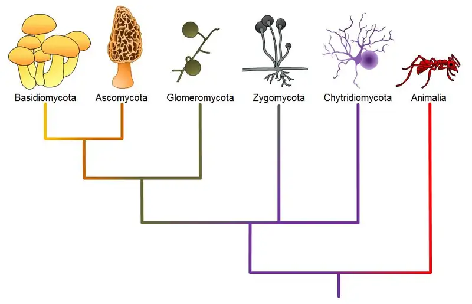
Chytridiomycota: The Chytrids¶
The only class in the Phylum Chytridiomycota is the Chytridiomycetes. The chytrids are the simplest and most primitive Eumycota, or true fungi. The evolutionary record shows that the first recognizable chytrids appeared during the late pre-Cambrian period, more than 500 million years ago. Like all fungi, chytrids have chitin in their cell walls, but one group of chytrids has both cellulose and chitin in the cell wall. Most chytrids are unicellular; however, a few form multicellular organisms and hyphae, which have no septa between cells (coenocytic). The Chytrids are the only fungi that have retained flagella. They produce both gametes and diploid zoospores that swim with the help of a single flagellum. An unusual feature of the chytrids is that both male and female gametes are flagellated.
The ecological habitat and cell structure of chytrids have much in common with protists. Chytrids usually live in aquatic environments, although some species live on land. Some species thrive as parasites on plants, insects, or amphibians (Figure 24.11), while others are saprobes. The chytrid species Allomyces is well characterized as an experimental organism. Its reproductive cycle includes both asexual and sexual phases. Allomyces produces diploid or haploid flagellated zoospores in a sporangium.
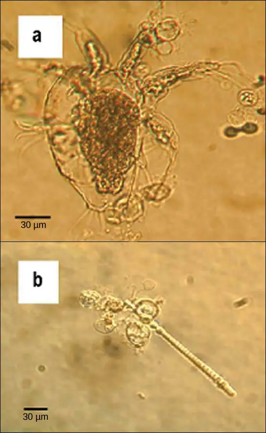
Zygomycota: The Conjugated Fungi¶
The zygomycetes are a relatively small group of fungi belonging to the Phylum Zygomycota. They include the familiar bread mold, Rhizopus stolonifer, which rapidly propagates on the surfaces of breads, fruits, and vegetables. Most species are saprobes, living off decaying organic material; a few are parasites, particularly of insects. Zygomycetes play a considerable commercial role. For example, the metabolic products of some species of Rhizopus are intermediates in the synthesis of semi-synthetic steroid hormones.
Zygomycetes have a thallus of coenocytic hyphae in which the nuclei are haploid when the organism is in the vegetative stage. The fungi usually reproduce asexually by producing sporangiospores (Figure 24.12). The black tips of bread mold are the swollen sporangia packed with black spores (Figure 24.13). When spores land on a suitable substrate, they germinate and produce a new mycelium. Sexual reproduction starts when environmental conditions become unfavorable. Two opposing mating strains (type + and type –) must be in close proximity for gametangia from the hyphae to be produced and fuse, leading to karyogamy. Each zygospore can contain several diploid nuclei. The developing diploid zygospores have thick coats that protect them from desiccation and other hazards. They may remain dormant until environmental conditions are favorable. When the zygospore germinates, it undergoes meiosis and produces haploid spores, which will, in turn, grow into a new organism. This form of sexual reproduction in fungi is called conjugation (although it differs markedly from conjugation in bacteria and protists), giving rise to the name “conjugated fungi”.
![The asexual and sexual life cycles of zygomycetes are shown. In the asexual life cycle, 1n spores undergo mitosis to form long chains of cells called mycelia. Germination results in the formation of more spores. In the sexual life cycle, spores germinate to form mycelia with two different mating types: plus and minus. If the plus and minus mating types are in close proximity, extensions called gametangia form between them. In a process called plasmogamy, the gametangia fuse to form a zygosporangium with multiple haploid nuclei. A thick, protective coat forms around the zygosporangium. In a process called karyogamy, the nuclei fuse to form a zygote with multiple diploid (2n) nuclei. The zygote undergoes meiosis and germination. A sporangium grows on a short stalk. Haploid spores are formed inside. The spores germinate, ending the cycle.](img/figure-b24-02-02.webp)
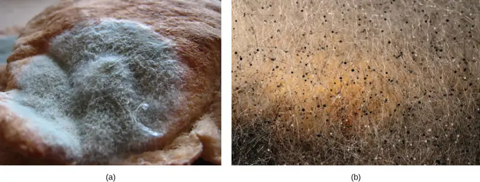
Ascomycota: The Sac Fungi¶
The majority of known fungi belong to the Phylum Ascomycota, which is characterized by the formation of an ascus (plural, asci), a sac-like structure that contains haploid ascospores. Filamentous ascomycetes produce hyphae divided by perforated septa, allowing streaming of cytoplasm from one cell to another. Conidia and asci, which are used respectively for asexual and sexual reproduction, are usually separated from the vegetative hyphae by blocked (non-perforated) septa. Many ascomycetes are of commercial importance. Some play a beneficial role for humanity, such as the yeasts used in baking, brewing, and wine fermentation, and directly as food delicacies such as truffles and morels. Aspergillus oryzae is used in the fermentation of rice to produce sake. Other ascomycetes parasitize plants and animals, including humans. For example, fungal pneumonia poses a significant threat to AIDS patients who have a compromised immune system. Ascomycetes not only infest and destroy crops directly; they also produce poisonous secondary metabolites that make crops unfit for consumption.
Asexual reproduction is frequent and involves the production of conidiophores that release haploid conidiospores (Figure 24.14). Sexual reproduction starts with the development of special hyphae from either one of two types of mating strains (Figure 24.14). The “male” strain produces an antheridium and the “female” strain develops an ascogonium. At fertilization, the antheridium and the ascogonium combine in plasmogamy, without nuclear fusion. Special dikaryotic ascogenous (ascus-producing) hyphae arise from this dikaryon, in which each cell has pairs of nuclei: one from the “male” strain and one from the “female” strain. In each ascus, two haploid nuclei fuse in karyogamy. Thousands of asci fill a fruiting body called the ascocarp. The diploid nucleus in each ascus gives rise to haploid nuclei by meiosis, and spore walls form around each nucleus. The spores in each ascus contain the meiotic products of a single diploid nucleus. The ascospores are then released, germinate, and form hyphae that are disseminated in the environment and start new mycelia (Figure 24.15).
Visual Connection
![Ascomycetes have both sexual and asexual life cycles. In the asexual life cycle, the haploid (1n) mycelium branches into a chain of cells called the conidiophore. Spores bud from the end of the conidiophore and germinate to form more mycelia. In the sexual life cycle, a round structure called an antheridium buds from the male strain, and a similar structure called the ascogonium buds from the female strain. In a process called plasmogamy, the ascogonium and antheridium fuse to form a cell with multiple haploid nuclei. Mitosis and cell division result in the growth of many hyphae, which form a fruiting body called the ascocarp. The hyphae are dikaryotic, meaning they have two haploid nuclei. Asci form at the tips of these hyphae. In a process called karyogamy, the nuclei in the asci fuse to form a diploid (2n) zygote. The zygote undergoes meiosis without cell division, resulting in an ascus with four 1n nuclei arranged in a row. Each nucleus undergoes mitosis, resulting in eight ascospores, which are also arranged in a row at the tip of the hyphae. Dispersal and germination results in the growth of new mycelia.](img/figure-b24-02-04.webp)
Which of the following statements is true?
- A dikaryotic ascus that forms in the ascocarp undergoes karyogamy, meiosis, and mitosis to form eight ascospores.
- A diploid ascus that forms in the ascocarp undergoes karyogamy, meiosis, and mitosis to form eight ascospores.
- A haploid zygote that forms in the ascocarp undergoes karyogamy, meiosis, and mitosis to form eight ascospores.
- A dikaryotic ascus that forms in the ascocarp undergoes plasmogamy, meiosis, and mitosis to form eight ascospores.
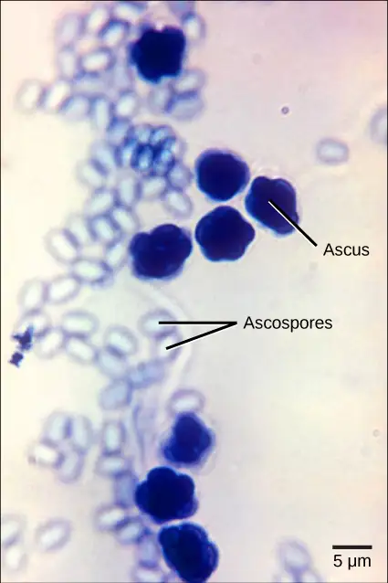
Basidiomycota: The Club Fungi¶
The fungi in the Phylum Basidiomycota are easily recognizable under a light microscope by their club-shaped fruiting bodies called basidia (singular, basidium), which are the swollen terminal cells of hyphae. The basidia, which are the reproductive organs of these fungi, are often contained within the familiar mushroom, commonly seen in fields after rain, on the supermarket shelves, and growing on your lawn (Figure 24.16). These mushroom-producing basidiomycetes are sometimes referred to as “gill fungi” because of the presence of gill-like structures on the underside of the cap. The gills are actually compacted hyphae on which the basidia are borne. This group also includes shelf fungi, which cling to the bark of trees like small shelves. In addition, the basidiomycota include smuts and rusts, which are important plant pathogens. Most edible fungi belong to the Phylum Basidiomycota; however, some basidiomycota are inedible and produce deadly toxins. For example, Cryptococcus neoformans causes severe respiratory illness. The infamous death cap mushroom (Amanita phalloides) is related to the fly agaric seen at the beginning of the previous section.
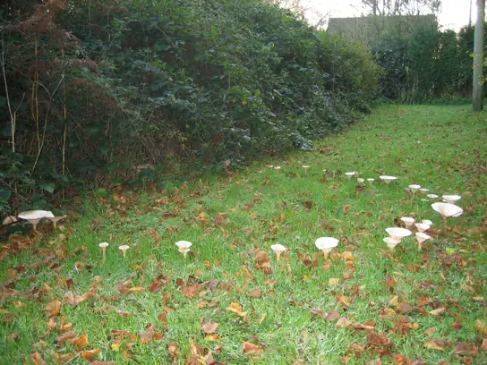
The lifecycle of basidiomycetes includes sexual and asexual reproduction (Figure 24.17). Most fungi are haploid through most of their life cycles, but the basidiomycetes produce both haploid and dikaryotic mycelia, with the dikaryotic phase being dominant. (Note: The dikaryotic phase is technically not diploid, since the nuclei remain unfused until shortly before spore production.) In the basidiomycetes, sexual spores are more common than asexual spores. The sexual spores form in the club-shaped basidium and are called basidiospores. In the basidium, nuclei of two different mating strains fuse (karyogamy), giving rise to a diploid zygote that then undergoes meiosis. The haploid nuclei migrate into four different chambers appended to the basidium, and then become basidiospores.
Each basidiospore germinates and generates monokaryotic haploid hyphae. The mycelium that results is called a primary mycelium. Mycelia of different mating strains can combine and produce a secondary mycelium that contains haploid nuclei of two different mating strains. This is the dominant dikaryotic stage of the basidiomycete life cycle. Thus, each cell in this mycelium has two haploid nuclei, which will not fuse until formation of the basidium. Eventually, the secondary mycelium generates a basidiocarp, a fruiting body that protrudes from the ground—this is what we think of as a mushroom. The basidiocarp bears the developing basidia on the gills under its cap.
Visual Connection
![The life cycle of basidiomycetes, better known as mushrooms, is shown. Basidiomycetes have a sexual life cycle that begins with the germination of 1n basidiospores into mycelia with plus and minus mating types. In a process called plasmogamy, the plus and minus mycelia form a dikaryotic mycelium. Under the right conditions, the dikaryotic mycelium grows into a basdiocarp, or mushroom. Gills on the underside of the mushroom cap contain cells called basidia. The basidia undergo karyogamy to form a 2n zygote. The zygote undergoes meiosis to form cells with four haploid (1n) nuclei. Cell division results in four basidiospores. Dispersal and germination of basidiospores ends the cycle.](img/figure-b24-02-07.webp)
Which of the following statements is true?
- A basidium is the fruiting body of a mushroom-producing fungus, and it forms four basidiocarps.
- The result of the plasmogamy step is four basidiospores.
- Karyogamy results directly in the formation of mycelia.
- A basidiocarp is the fruiting body of a mushroom-producing fungus.
Asexual Ascomycota and Basidiomycota¶
Imperfect fungi—those that do not display a sexual phase—were formerly classified in the form phylum Deuteromycota, an invalid taxon no longer used in the present, ever-developing classification of organisms. While Deuteromycota was once a classification taxon, recent molecular analysis has shown that some of the members classified in this group belong to the Ascomycota (Figure 24.18) or the Basidiomycota. Because some members of this group have not yet been appropriately classified, they are less well described in comparison to members of other fungal taxa. Most imperfect fungi live on land, with a few aquatic exceptions. They form visible mycelia with a fuzzy appearance and are commonly known as mold.
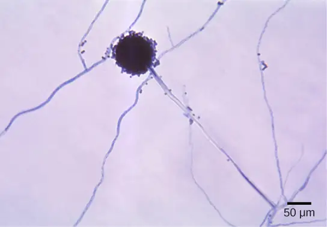
The fungi in this group have a large impact on everyday human life. The food industry relies on them for ripening some cheeses. The blue veins in Roquefort cheese and the white crust on Camembert are the result of fungal growth. The antibiotic penicillin was originally discovered on an overgrown Petri plate, on which a colony of Penicillium fungi had killed the bacterial growth surrounding it. Other fungi in this group cause serious diseases, either directly as parasites (which infect both plants and humans), or as producers of potent toxic compounds, as seen in the aflatoxins released by fungi of the genus Aspergillus.
Glomeromycota¶
The Glomeromycota is a newly established phylum that comprises about 230 species, all of which are involved in close associations with the roots of trees. Fossil records indicate that trees and their root symbionts share a long evolutionary history. It appears that nearly all members of this family form arbuscular mycorrhizae: the hyphae interact with the root cells forming a mutually beneficial association in which the plants supply the carbon source and energy in the form of carbohydrates to the fungus, and the fungus supplies essential minerals from the soil to the plant. The exception is Geosiphon pyriformis, which hosts the cyanobacterium Nostoc as an endosymbiont.
The glomeromycetes do not reproduce sexually and do not survive without the presence of plant roots. Although they have coenocytic hyphae like the zygomycetes, they do not form zygospores. DNA analysis shows that all glomeromycetes probably descended from a common ancestor, making them a monophyletic lineage.
24.3 Ecology of Fungi¶
Learning Objectives
By the end of this section, you will be able to do the following:
- Describe the role of fungi in various ecosystems
- Describe mutualistic relationships of fungi with plant roots and photosynthetic organisms
- Describe the beneficial relationship between some fungi and insects
Fungi play a crucial role in the constantly changing “balance” of ecosystems. They colonize most habitats on Earth, preferring dark, moist conditions. They can thrive in seemingly hostile environments, such as the tundra, thanks to a most successful symbiosis with photosynthetic organisms like algae to produce lichens. Within their communities, fungi are not as obvious as are large animals or tall trees. Like bacteria, they act behind the scenes as major decomposers. With their versatile metabolism, fungi break down organic matter, which would otherwise not be recycled.
Habitats¶
Although fungi are primarily associated with humid and cool environments that provide a supply of organic matter, they colonize a surprising diversity of habitats, from seawater to human skin and mucous membranes. Chytrids are found primarily in aquatic environments. Other fungi, such as Coccidioides immitis, which causes pneumonia when its spores are inhaled, thrive in the dry and sandy soil of the southwestern United States. Fungi that parasitize coral reefs live in the ocean. However, most members of the Kingdom Fungi grow on the forest floor, where the dark and damp environment is rich in decaying debris from plants and animals. In these environments, fungi play a major role as decomposers and recyclers, making it possible for members of the other kingdoms to be supplied with nutrients and live.
Decomposers and Recyclers¶
The food web would be incomplete without organisms that decompose organic matter (Figure 24.19). Some elements—such as nitrogen and phosphorus—are required in large quantities by biological systems, and yet are not abundant in the environment. The action of fungi releases these elements from decaying matter, making them available to other living organisms. Trace elements present in low amounts in many habitats are essential for growth, and would remain tied up in rotting organic matter if fungi and bacteria did not return them to the environment via their metabolic activity.
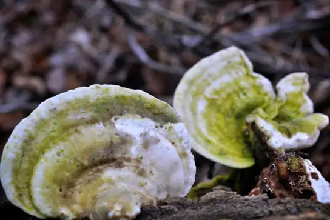
The ability of fungi to degrade many large and insoluble molecules is due to their mode of nutrition. As seen earlier, digestion precedes ingestion. Fungi produce a variety of exoenzymes to digest nutrients. The enzymes are either released into the substrate or remain bound to the outside of the fungal cell wall. Large molecules are broken down into small molecules, which are transported into the cell by a system of protein carriers embedded in the cell membrane. Because the movement of small molecules and enzymes is dependent on the presence of water, active growth depends on a relatively high percentage of moisture in the environment.
As saprobes, fungi help maintain a sustainable ecosystem for the animals and plants that share the same habitat. In addition to replenishing the environment with nutrients, fungi interact directly with other organisms in beneficial, and sometimes damaging, ways (Figure 24.20).
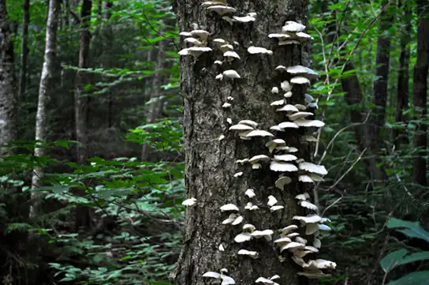
Mutualistic Relationships¶
Symbiosis is the ecological interaction between two organisms that live together. This definition does not describe the type or quality of the interaction. When both members of the association benefit, the symbiotic relationship is called mutualistic. Fungi form mutualistic associations with many types of organisms, including cyanobacteria, algae, plants, and animals.
Fungus/Plant Mutualism¶
One of the most remarkable associations between fungi and plants is the establishment of mycorrhizae. Mycorrhiza, which is derived from the Greek words myco meaning fungus and rhizo meaning root, refers to the fungal partner of a mutualistic association between vascular plant roots and their symbiotic fungi. Nearly 90 percent of all vascular plant species have mycorrhizal partners. In a mycorrhizal association, the fungal mycelia use their extensive network of hyphae and large surface area in contact with the soil to channel water and minerals from the soil into the plant. In exchange, the plant supplies the products of photosynthesis to fuel the metabolism of the fungus.
There are several basic types of mycorrhizae. Ectomycorrhizae (“outside” mycorrhizae) depend on fungi enveloping the roots in a sheath (called a mantle). Hyphae grow from the mantle into the root and envelope the outer layers of the root cells in a network of hyphae called a Hartig net (Figure 24.21). The fungal partner can belong to the Ascomycota, Basidiomycota or Zygomycota. Endomycorrhizae ("inside" mycorrhizae), also called arbuscular mycorrhizae, are produced when the fungi grow inside the root in a branched structure called an arbuscule (from the Latin for “little trees”). The fungal partners of endomycorrhizal associates all belong to the Glomeromycota. The fungal arbuscules penetrate root cells between the cell wall and the plasma membrane and are the site of the metabolic exchanges between the fungus and the host plant (Figure 24.21b and Figure 24.22b). Orchids rely on a third type of mycorrhiza. Orchids are epiphytes that typically produce very small airborne seeds without much storage to sustain germination and growth. Their seeds will not germinate without a mycorrhizal partner (usually a Basidiomycete). After nutrients in the seed are depleted, fungal symbionts support the growth of the orchid by providing necessary carbohydrates and minerals. Some orchids continue to be mycorrhizal throughout their life cycle.
Visual Connection
![The figure compares two types of mycorrhizae: ectomycorrhiza and arbuscular mycorrhiza. Part A is an illustration of an ectomycorrhiza mycorrhiza. In ectomycorrhiza, fungal hyphae form a structure called a Hartig net inside the root. The Hartig net forms rows of cells that extend straight down, and branch toward the outside of the root. A fungal mantle surrounds the root. Mycelia extend from the fungal mantle. In arbuscular mycorrhiza, the fungi form finger-like clusters that are connected to mycelia that extend from the root into the soil. Part B is a micrograph of arbuscular mycorrhiza, which appear as grape-like clusters in a root tip.](img/figure-24-03-03.webp)
If symbiotic fungi were absent from the soil, what impact do you think this would have on plant growth?
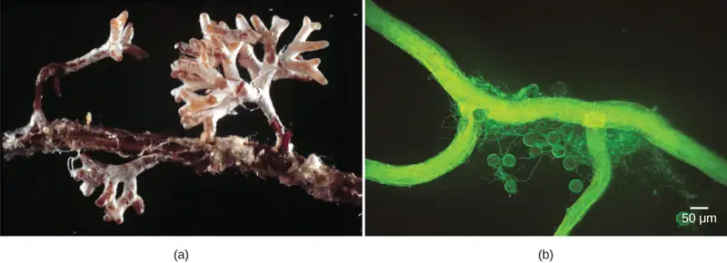
Other examples of fungus–plant mutualism include the endophytes: fungi that live inside tissue without damaging the host plant. Endophytes release toxins that repel herbivores, or confer resistance to environmental stress factors, such as infection by microorganisms, drought, or heavy metals in soil.
Evolution Connection: Coevolution of Land Plants and Mycorrhizae
As we have seen, mycorrhizae are the fungal partners of a mutually beneficial symbiotic association that coevolved between roots of vascular plants and fungi. A well-supported theory proposes that fungi were instrumental in the evolution of the root system in plants and contributed to the success of Angiosperms. The bryophytes (mosses and liverworts), which are considered the most ancestral plants and the first to survive and adapt on land, have simple underground rhizoids, rather than a true root system, and therefore cannot survive in dry areas. However, some bryophytes have arbuscular mycorrhizae and some do not.
True roots first appeared in the ancestral vascular plants: Vascular plants that developed a system of thin extensions from their roots would have had a selective advantage over nonvascular plants because they had a greater surface area of contact with the fungal partners than did the rhizoids of mosses and liverworts. The first true roots would have allowed vascular plants to obtain more water and nutrients in the ground.
Fossil records indicate that fungi actually preceded the invasion of ancestral freshwater plants onto dry land. The first association between fungi and photosynthetic organisms on land involved moss-like plants and endophytes. These early associations developed before roots appeared in plants. Slowly, the benefits of the endophyte and rhizoid interactions for both partners led to present-day mycorrhizae: About 90 percent of today’s vascular plants have associations with fungi in their rhizosphere.
The fungi involved in mycorrhizae display many characteristics of ancestral fungi; they produce simple spores, show little diversification, do not have a sexual reproductive cycle, and cannot live outside of a mycorrhizal association. The plants benefited from the association because mycorrhizae allowed them to move into new habitats and allowed the increased uptake of nutrients, which gave them an enormous selective advantage over plants that did not establish symbiotic relationships.
Lichens¶
Lichens display a range of colors and textures (Figure 24.23) and can survive in the most unusual and hostile habitats. They cover rocks, gravestones, tree bark, and the ground in the tundra where plant roots cannot penetrate. Lichens can survive extended periods of drought, when they become completely desiccated, and then rapidly become active once water is available again.
Interactive
Explore the world of lichens using this site from Oregon State University.
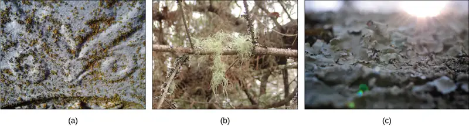
It is important to note that lichens are not a single organism, but rather another wonderful example of a mutualism, in which a fungus (usually a member of the Ascomycota or Basidiomycota) lives in a physical and physiological relationship with a photosynthetic organism (a eukaryotic alga or a prokaryotic cyanobacterium) (Figure 24.24). Generally, neither the fungus nor the photosynthetic organism can survive alone outside of the symbiotic relationship. The body of a lichen, referred to as a thallus, is formed of hyphae wrapped around the photosynthetic partner. The photosynthetic organism provides carbon and energy in the form of carbohydrates. Some cyanobacteria additionally fix nitrogen from the atmosphere, contributing nitrogenous compounds to the association. In return, the fungus supplies minerals and protection from dryness and excessive light by encasing the algae in its mycelium. The fungus also attaches the lichen to its substrate.
![The lichen has multiple layers. The top layer, or upper cortex, is made up of compact fungal hyphae that provide protection to the lichen. Beneath this layer is the algal zone, where fungal hyphae wrap around the photosynthetic algal cells. Below the algal zone is a layer known as the medulla, which is comprised of more loosely arranged fungal hyphae. Beneath the medulla lies the lower cortex, which, like the upper cortex, is comprised of compact fungal hyphae that provide protection to the lichen. Projections beneath the lower cortex anchor the lichen to its substrate.](img/figure-24-03-06.webp)
The thallus of lichens grows very slowly, expanding its diameter a few millimeters per year. Both the fungus and the alga participate in the formation of dispersal units, called soredia—clusters of algal cells surrounded by mycelia. Soredia are dispersed by wind and water and form new lichens.
Lichens are extremely sensitive to air pollution, especially to abnormal levels of nitrogenous and sulfurous compounds. The U.S. Forest Service and National Park Service can monitor air quality by measuring the relative abundance and health of the lichen population in an area. Lichens fulfill many ecological roles. Caribou and reindeer eat lichens, and they provide cover for small invertebrates that hide in the mycelium. In the production of textiles, weavers used lichens to dye wool for many centuries until the advent of synthetic dyes. The pigments used in litmus paper are also extracted from lichens.
Interactive
Lichens are used to monitor the quality of air. Read more on this site from the United States Forest Service.
Fungus/Animal Mutualism¶
Fungi have evolved mutualisms with numerous insects in Phylum Arthropoda: joint-legged invertebrates with a chitinous exoskeleton. Arthropods depend on the fungus for protection from predators and pathogens, while the fungus obtains nutrients and a way to disseminate spores into new environments. The association between species of Basidiomycota and scale insects is one example. The fungal mycelium covers and protects the insect colonies. The scale insects foster a flow of nutrients from the parasitized plant to the fungus.
In a second example, leaf-cutter ants of Central and South America literally farm fungi. They cut disks of leaves from plants and pile them up in subterranean gardens (Figure 24.25). Fungi are cultivated in these disk gardens, digesting the cellulose in the leaves that the ants cannot break down. Once smaller sugar molecules are produced and consumed by the fungi, the fungi in turn become a meal for the ants. The insects also patrol their garden, preying on competing fungi. Both ants and fungi benefit from this mutualistic association. The fungus receives a steady supply of leaves and freedom from competition, while the ants feed on the fungi they cultivate.
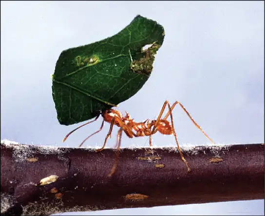
Fungivores¶
Animal dispersal is important for some fungi because an animal may carry fungal spores considerable distances from the source. Fungal spores are rarely completely degraded in the gastrointestinal tract of an animal, and many are able to germinate when they are passed in the feces. Some “dung fungi” actually require passage through the digestive system of herbivores to complete their lifecycle. The black truffle—a prized gourmet delicacy—is the fruiting body of an underground ascomycete. Almost all truffles are ectomycorrhizal, and are usually found in close association with trees. Animals eat truffles and disperse the spores. In Italy and France, truffle hunters use female pigs to sniff out truffles (female pigs are attracted to truffles because the fungus releases a volatile compound closely related to a pheromone produced by male pigs.)
24.4 Fungal Parasites and Pathogens¶
Learning Objectives
By the end of this section, you will be able to do the following:
- Describe some fungal parasites and pathogens of plants
- Describe the different types of fungal infections in humans
- Explain why antifungal therapy is hampered by the similarity between fungal and animal cells
Parasitism describes a symbiotic relationship in which one member of the association benefits at the expense of the other. Both parasites and pathogens harm the host; however, pathogens cause disease, damage to host tissues or physiology, whereas parasites usually do not, but can cause serious damage and death by competition for nutrients or other resources. Commensalism occurs when one member benefits without affecting the other.
Plant Parasites and Pathogens¶
The production of sufficient high-quality crops is essential to human existence. Unfortunately, plant diseases have ruined many crops throughout human agricultural history, sometimes creating widespread famine. Many plant pathogens are fungi that cause tissue decay and the eventual death of the host (Figure 24.26). In addition to destroying plant tissue directly, some plant pathogens spoil crops by producing potent toxins that can further damage and kill the host plant. Fungi are also responsible for food spoilage and the rotting of stored crops. For example, the fungus Claviceps purpurea causes ergot, a disease of cereal crops (especially of rye). Although the fungus reduces the yield of cereals, the effects of the ergot's alkaloid toxins on humans and animals are of much greater significance. In animals, the disease is referred to as ergotism. The most common signs and symptoms are convulsions, hallucination, gangrene, and loss of milk in cattle. The active ingredient of ergot is lysergic acid, which is a precursor of the drug LSD. Smuts, rusts, and powdery or downy mildew are other examples of common fungal pathogens that affect crops.
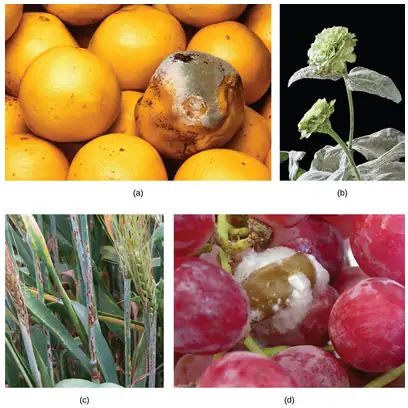
Aflatoxins are toxic, carcinogenic compounds released by fungi of the genus Aspergillus. Periodically, harvests of nuts and grains are tainted by aflatoxins, leading to massive recall of produce. This sometimes ruins producers and causes food shortages in developing countries.
Animal and Human Parasites and Pathogens¶
Fungi can affect animals, including humans, in several ways. A mycosis is a fungal disease that results from infection and direct damage due to the growth and infiltration of the fungus. Fungi attack animals directly by colonizing and destroying tissues. Mycotoxicosis is the poisoning of humans (and other animals) by foods contaminated by fungal toxins (mycotoxins). Mycetismus specifically describes the ingestion of preformed toxins in poisonous mushrooms. In addition, individuals who display hypersensitivity to molds and spores may develop strong and dangerous allergic reactions. Fungal infections are generally very difficult to treat because, unlike bacteria, fungi are eukaryotes. Antibiotics only target prokaryotic cells, whereas compounds that kill fungi also harm the eukaryotic animal host.
Many fungal infections are superficial; that is, they occur on the animal’s skin. Termed cutaneous (“skin”) mycoses, they can have devastating effects. For example, the decline of the world’s frog population in recent years is caused (in part) by the chytrid fungus Batrachochytrium dendrobatidis. This deadly fungus infects the skin of frogs and presumably interferes with cutaneous gaseous exchange, which is essential for amphibian survival. Similarly, more than a million bats in the United States have been killed by white-nose syndrome, which appears as a white ring around the mouth of the bat. It is caused by the cold-loving fungus Pseudogymnoascus destructans, which disseminates its deadly spores in caves where bats hibernate. Mycologists are researching the transmission, mechanism, and control of P. destructans to stop its spread.
Fungi that cause the superficial mycoses of the epidermis, hair, and nails rarely spread to the underlying tissue (Figure 24.27). These fungi are often misnamed “dermatophytes”, from the Greek words dermis meaning skin and phyte meaning plant, although they are not plants. Dermatophytes are also called “ringworms” because of the red ring they cause on skin. They secrete extracellular enzymes that break down keratin (a protein found in hair, skin, and nails), causing conditions such as athlete’s foot and jock itch. These conditions are usually treated with over-the-counter topical creams and powders, and are easily cleared. More persistent superficial mycoses may require prescription oral medications.
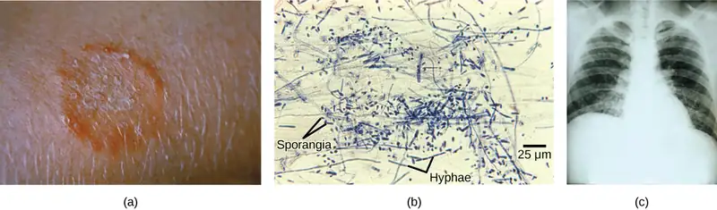
Systemic mycoses spread to internal organs, most commonly entering the body through the respiratory system. For example, coccidioidomycosis (often called valley fever) is commonly found in the southwestern United States, but as far north as Washington, where the fungus resides in the dust. Once inhaled, the spores develop in the lungs and cause symptoms similar to those of tuberculosis. Histoplasmosis is caused by the dimorphic fungus Histoplasma capsulatum. In its human host, Histoplasma grows as a yeast, causing pulmonary infections, and in rarer cases, swelling of the membranes of the brain and spinal cord. Treatment of these and many other fungal diseases requires the use of antifungal medications that have serious side effects.
Opportunistic mycoses are fungal infections that are either common in all environments, or part of the normal biota. They mainly affect individuals who have a compromised immune system. Patients in the late stages of AIDS suffer from opportunistic mycoses that can be life threatening. The yeast Candida sp., a common member of the natural biota, can grow unchecked and infect the vagina or mouth (oral thrush) if the pH of the surrounding environment, the person’s immune defenses, or the normal population of bacteria are altered.
Mycetismus can occur when poisonous mushrooms are eaten. It causes a number of human fatalities during mushroom-picking season. Many edible fruiting bodies of fungi resemble highly poisonous relatives, and amateur mushroom hunters are cautioned to carefully inspect their harvest and avoid eating mushrooms of doubtful origin. The adage “there are bold mushroom pickers and old mushroom pickers, but are there no old, bold mushroom pickers” is unfortunately true.
Scientific Method Connection
Dutch Elm Disease
Question: Do trees resistant to Dutch elm disease secrete antifungal compounds?
Hypothesis: Construct a hypothesis that addresses this question.
Background: Dutch elm disease is a fungal infestation that affects many species of elm (Ulmus) in North America. The fungus infects the vascular system of the tree, which blocks water flow within the plant and mimics drought stress. Accidently introduced to the United States in the early 1930s, it decimated American elm shade trees across the continent. It is caused by the fungus Ophiostoma ulmi. The elm bark beetle acts as a vector and transmits the disease from tree to tree. Many European and Asiatic elms are less susceptible to the disease than are American elms.
Test the hypothesis: A researcher testing this hypothesis might do the following. Inoculate several Petri plates containing a medium that supports the growth of fungi with fragments of Ophiostoma mycelium. Cut (with a metal punch) several disks from the vascular tissue of susceptible varieties of American elms and resistant European and Asiatic elms. Include control Petri plates inoculated with mycelia without plant tissue to verify that the medium and incubation conditions do not interfere with fungal growth. As a positive control, add paper disks impregnated with a known fungicide to Petri plates inoculated with the mycelium.
Incubate the plates for a set number of days to allow fungal growth and spreading of the mycelium over the surface of the plate. Record the diameter of the zone of clearing, if any, around the tissue samples and the fungicide control disk.
Record your observations in the following table.
Table 24.1
| Results of Antifungal Testing of Vascular Tissue from Different Species of Elm | |
|---|---|
| Disk | Zone of Inhibition (mm) |
| Distilled Water | |
| Fungicide | |
| Tissue from Susceptible Elm #1 | |
| Tissue from Susceptible Elm #2 | |
| Tissue from Resistant Elm #1 | |
| Tissue from Resistant Elm #2 | |
Analyze the data and report the results. Compare the effect of distilled water to the fungicide. These are negative and positive controls that validate the experimental setup. The fungicide should be surrounded by a clear zone where the fungus growth was inhibited. Is there a difference among different species of elm?
Draw a conclusion: Was there antifungal activity as expected from the fungicide? Did the results support the hypothesis? If not, how can this be explained? There are several possible explanations.
24.5 Importance of Fungi in Human Life¶
Learning Objectives
By the end of this section, you will be able to do the following:
- Describe the importance of fungi to the balance of the environment
- Summarize the role of fungi in agriculture and food and beverage preparation
- Describe the importance of fungi in the chemical and pharmaceutical industries
- Discuss the role of fungi as model organisms
Although we often think of fungi as organisms that cause disease and rot food, they are vitally important to human life on many levels. As we have seen, fungi influence the well-being of human populations on a large scale because they are part of the nutrient cycle in ecosystems. They have other ecosystem roles as well. As animal pathogens, fungi help to control the population of damaging pests. These fungi are very specific to the insects they attack, and do not infect other animals or plants. Fungi are currently under investigation as potential microbial insecticides, with several already on the market. For example, the fungus Beauveria bassiana is being tested as a possible biological control agent for the recent spread of emerald ash borer a beetle that feeds on ash trees. It has been released in Michigan, Illinois, Indiana, Ohio, West Virginia, and Maryland (Figure 24.28).
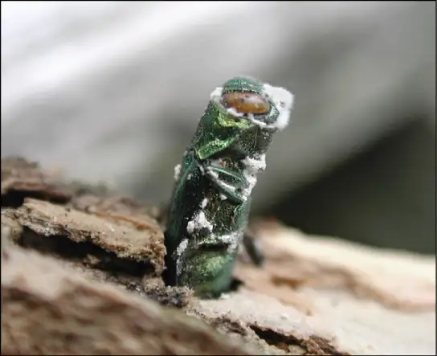
The mycorrhizal relationship between fungi and plant roots is essential for the productivity of farm land. Without the fungal partner in root systems, 80–90 percent of trees and grasses would not survive. Mycorrhizal fungal inoculants are available as soil amendments from gardening supply stores and are promoted by supporters of organic agriculture, but there is little evidence as to the effectiveness.
We also eat some types of fungi. Mushrooms figure prominently in the human diet. Morels, shiitake mushrooms, chanterelles, and truffles are considered delicacies (Figure 24.29). The humble meadow mushroom, Agaricus campestris, appears in many dishes. Molds of the genus Penicillium ripen many cheeses. They originate in the natural environment such as the caves of Roquefort, France, where wheels of sheep milk cheese are stacked in order to capture the molds responsible for the blue veins and pungent taste of the cheese.
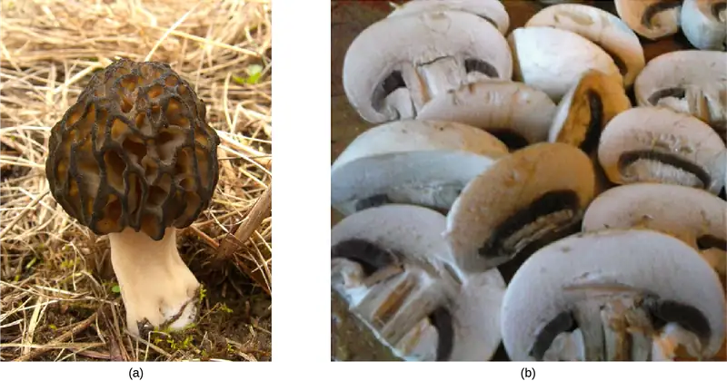
Fermentation—of grains to produce beer, and of fruits to produce wine—is an ancient art that humans in most cultures have practiced for millennia. Wild yeasts are acquired from the environment and used to ferment sugars into CO2 and ethyl alcohol under anaerobic conditions. It is now possible to purchase isolated strains of wild yeasts from different wine-making regions. Louis Pasteur was instrumental in developing a reliable strain of brewer’s yeast, Saccharomyces cerevisiae, for the French brewing industry in the late 1850s. This was one of the first examples of biotechnology patenting.
Many secondary metabolites of fungi are of great commercial importance. Antibiotics are naturally produced by fungi to kill or inhibit the growth of bacteria, limiting their competition in the natural environment. Important antibiotics, such as penicillin and the cephalosporins, are isolated from fungi. Valuable drugs isolated from fungi include the immunosuppressant drug cyclosporine (which reduces the risk of rejection after organ transplant), the precursors of steroid hormones, and ergot alkaloids used to stop bleeding. Psilocybin is a compound found in fungi such as Psilocybe semilanceata and Gymnopilus junonius, which have been used for their hallucinogenic properties by various cultures for thousands of years.
As simple eukaryotic organisms, fungi are important model research organisms. Many advances in modern genetics were achieved by the use of the red bread mold Neurospora crassa. Additionally, many important genes originally discovered in S. cerevisiae served as a starting point in discovering analogous human genes. As a eukaryotic organism, the yeast cell produces and modifies proteins in a manner similar to human cells, as opposed to the bacterium Escherichia coli, which lacks the internal membrane structures and enzymes to tag proteins for export. This makes yeast a much better organism for use in recombinant DNA technology experiments. Like bacteria, yeasts grow easily in culture, have a short generation time, and are amenable to genetic modification.
Chapter Review¶
Key Terms¶
- arbuscular mycorrhiza
- mycorrhizal association in which the fungal hyphae enter the root cells and form extensive networks
- Arbuscular mycorrhizae
- mycorrhizae commonly involving Glomeromycetes in which the fungal hyphae penetrate the cell walls of the plant root cells (but not the cell membranes)
- ascocarp
- fruiting body of ascomycetes
- Ascomycota
- (also, sac fungi) phylum of fungi that store spores in a sac called ascus
- basidiocarp
- fruiting body that protrudes from the ground and bears the basidia
- Basidiomycota
- (also, club fungi) phylum of fungi that produce club-shaped structures (basidia) that contain spores
- basidium
- club-shaped fruiting body of basidiomycetes
- Chytridiomycota
- (also, chytrids) primitive phylum of fungi that live in water and produce gametes with flagella
- coenocytic hypha
- single hypha that lacks septa and contains many nuclei
- commensalism
- symbiotic relationship in which one member benefits while the other member is not affected
- Deuteromycota
- former form phylum of fungi that do not have a known sexual reproductive cycle (presently members of two phyla: Ascomycota and Basidiomycota)
- ectomycorrhiza
- mycorrhizal fungi that surround the roots with a mantle and have a Hartig net that extends into the roots between cells
- Ectomycorrhizae
- mycorrhizae in which the fungal hyphae do not penetrate the root cells of the plant
- facultative anaerobes
- organisms that can perform both aerobic and anaerobic respiration and can survive in oxygen-rich and oxygen-poor environment
- Glomeromycota
- phylum of fungi that form symbiotic relationships with the roots of trees
- haustoria
- modified hyphae on many parasitic fungi that penetrate the tissues of their hosts, release digestive enzymes, and/or absorb nutrients from the host
- heterothallic
- describes when only one mating type is present in an individual mycelium
- homothallic
- describes when both mating types are present in mycelium
- hypha
- fungal filament composed of one or more cells
- karyogamy
- fusion of nuclei
- lichen
- close association of a fungus with a photosynthetic alga or bacterium that benefits both partners
- mold
- tangle of visible mycelia with a fuzzy appearance
- mycelium
- mass of fungal hyphae
- mycetismus
- ingestion of toxins in poisonous mushrooms
- mycology
- scientific study of fungi
- mycorrhiza
- mutualistic association between fungi and vascular plant roots
- mycorrhizae
- a mutualistic relationship between a plant and a fungus. Mycorrhizae are connections between fungal hyphae, which provide soil minerals to the plant, and plant roots, which provide carbohydrates to the fungus
- mycosis
- fungal infection
- mycotoxicosis
- poisoning by a fungal toxin released in food
- obligate aerobes
- organisms, such as humans, that must perform aerobic respiration to survive
- obligate anaerobes
- organisms that only perform anaerobic respiration and often cannot survive in the presence of oxygen
- parasitism
- symbiotic relationship in which one member of the association benefits at the expense of the other
- plasmogamy
- fusion of cytoplasm
- polyphyletic group
- group of organisms that is of mixed evolutionary origin
- saprobe
- organism that derives nutrients from decaying organic matter; also saprophyte
- septa
- cell wall division between hyphae
- soredia
- clusters of algal cells and mycelia that allow lichens to propagate
- sporangium
- reproductive sac that contains spores
- spore
- a haploid cell that can undergo mitosis to form a multicellular, haploid individual
- thallus
- vegetative body of a fungus
- yeast
- general term used to describe unicellular fungi
- Zygomycota
- (also, conjugated fungi) phylum of fungi that form a zygote contained in a zygospore
- zygospore
- structure with thick cell wall that contains the zygote in zygomycetes
Summary¶
24.1 Characteristics of Fungi¶
Fungi are eukaryotic organisms that appeared on land more than 450 million years ago, but clearly have an evolutionary history far greater. They are heterotrophs and contain neither photosynthetic pigments such as chlorophyll, nor organelles such as chloroplasts. Fungi that feed on decaying and dead matter are termed saprobes. Fungi are important decomposers that release essential elements into the environment. External enzymes called exoenzymes digest nutrients that are absorbed by the body of the fungus, which is called a thallus. A thick cell wall made of chitin surrounds the cell. Fungi can be unicellular as yeasts, or develop a network of filaments called a mycelium, which is often described as mold. Most species multiply by asexual and sexual reproductive cycles. In one group of fungi, no sexual cycle has been identified. Sexual reproduction involves plasmogamy (the fusion of the cytoplasm), followed by karyogamy (the fusion of nuclei). Following these processes, meiosis generates haploid spores.
24.2 Classifications of Fungi¶
Chytridiomycota (chytrids) are considered the most ancestral group of fungi. They are mostly aquatic, and their gametes are the only fungal cells known to have flagella. They reproduce both sexually and asexually; the asexual spores are called zoospores. Zygomycota (conjugated fungi) produce non-septate hyphae with many nuclei. Their hyphae fuse during sexual reproduction to produce a zygospore in a zygosporangium. Ascomycota (sac fungi) form spores in sacs called asci during sexual reproduction. Asexual reproduction is their most common form of reproduction. In the Basidiomycota (club fungi), the sexual phase predominates, producing showy fruiting bodies that contain club-shaped basidia, within which spores form. Most familiar mushrooms belong to this division. Fungi that have no known sexual cycle were originally classified in the “form phylum” Deuteromycota, but many have been classified by comparative molecular analysis with the Ascomycota and Basidiomycota. Glomeromycota form tight associations (called mycorrhizae) with the roots of plants.
24.3 Ecology of Fungi¶
Fungi have colonized nearly all environments on Earth, but are frequently found in cool, dark, moist places with a supply of decaying material. Fungi are saprobes that decompose organic matter. Many successful mutualistic relationships involve a fungus and another organism. Many fungi establish complex mycorrhizal associations with the roots of plants. Some ants farm fungi as a supply of food. Lichens are a symbiotic relationship between a fungus and a photosynthetic organism, usually an alga or cyanobacterium. The photosynthetic organism provides energy from stored carbohydrates, while the fungus supplies minerals and protection. Some animals that consume fungi help disseminate spores over long distances.
24.4 Fungal Parasites and Pathogens¶
Fungi establish parasitic relationships with plants and animals. Fungal diseases can decimate crops and spoil food during storage. Compounds produced by fungi can be toxic to humans and other animals. Mycoses are infections caused by fungi. Superficial mycoses affect the skin, whereas systemic mycoses spread through the body. Fungal infections are difficult to cure, since fungi, like their hosts, are eukaryotic, and cladistically related closely to Kingdom Animalia.
24.5 Importance of Fungi in Human Life¶
Fungi are important to everyday human life. Fungi are important decomposers in most ecosystems. Mycorrhizal fungi are essential for the growth of most plants. Fungi, as food, play a role in human nutrition in the form of mushrooms, and also as agents of fermentation in the production of bread, cheeses, alcoholic beverages, and numerous other food preparations. Secondary metabolites of fungi are used as medicines, such as antibiotics and anticoagulants. Fungi are model organisms for the study of eukaryotic genetics and metabolism.
Review Questions¶
24.1 Characteristics of Fungi¶
1. Which polysaccharide is usually found in the cell wall of fungi?
- starch
- glycogen
- chitin
- cellulose
Answer
C
2. Which of these organelles is not found in a fungal cell?
- chloroplast
- nucleus
- mitochondrion
- Golgi apparatus
Answer
A
3. The wall dividing individual cells in a fungal filament is called a
- thallus
- hypha
- mycelium
- septum
Answer
D
4. During sexual reproduction, a homothallic mycelium contains
- all septated hyphae
- all haploid nuclei
- both mating types
- none of the above
Answer
C
5. The life cycles of perfect fungi are most similar to which other organism?
- Hydra that undergo asexual budding
- Diploid-dominant pea plants
- Haploid-dominant green algae
- Bacteria undergoing binary fission
Answer
C
24.2 Classifications of Fungi¶
6. The most primitive phylum of fungi is the ________.
- Chytridiomycota
- Zygomycota
- Glomeromycota
- Ascomycota
Answer
A
7. Members of which phylum produce a club-shaped structure that contains spores?
- Chytridiomycota
- Basidiomycota
- Glomeromycota
- Ascomycota
Answer
B
8. Members of which phylum establish a successful symbiotic relationship with the roots of trees?
- Ascomycota
- Deuteromycota
- Basidiomycota
- Glomeromycota
Answer
D
9. The fungi that do not reproduce sexually used to be classified as ________.
- Ascomycota
- Deuteromycota
- Basidiomycota
- Glomeromycota
Answer
B
10. A scientist discovers a new species of fungus that introduces genetic diversity during reproduction by creating a diploid zygote. This new species cannot belong to which modern phylum of fungi?
- Zygomycota
- Glomeromycota
- Chytridiomycota
- Deuteromycota
Answer
B
24.3 Ecology of Fungi¶
11. What term describes the close association of a fungus with the root of a tree?
- a rhizoid
- a lichen
- a mycorrhiza
- an endophyte
Answer
C
12. Why are fungi important decomposers?
- They produce many spores.
- They can grow in many different environments.
- They produce mycelia.
- They recycle carbon and inorganic minerals by the process of decomposition.
Answer
D
13. Consider an ecosystem where all the fungi not involved in mycorrhizae are eliminated. How would this affect nitrogen intake by plants?
- Nitrogen intake would increase.
- Nitrogen intake would not change.
- Nitrogen intake would decrease.
- Nitrogen intake would stop.
Answer
C
24.4 Fungal Parasites and Pathogens¶
14. A fungus that climbs up a tree reaching higher elevation to release its spores in the wind and does not receive any nutrients from the tree or contribute to the tree’s welfare is described as a ________.
- commensal
- mutualist
- parasite
- pathogen
Answer
A
15. A fungal infection that affects nails and skin is classified as ________.
- systemic mycosis
- mycetismus
- superficial mycosis
- mycotoxicosis
Answer
C
16. The targets for anti-fungal drugs are much more limited than antibiotics or anti-viral medications. Why?
- There are more bacteria and viruses than fungi.
- Fungi can only be targeted during sexual reproduction, while bacteria and viruses can be targeted at any point in their lifespan.
- Fungi cause topical infections, while viruses and bacteria cause systemic infections.
- Human cells are much more similar to fungi cells than bacteria or viruses.
Answer
D
24.5 Importance of Fungi in Human Life¶
17. Yeast is a facultative anaerobe. This means that alcohol fermentation takes place only if:
- the temperature is close to 37°C
- the atmosphere does not contain oxygen
- sugar is provided to the cells
- light is provided to the cells
Answer
B
18. The advantage of yeast cells over bacterial cells to express human proteins is that:
- yeast cells grow faster
- yeast cells are easier to manipulate genetically
- yeast cells are eukaryotic and modify proteins similarly to human cells
- yeast cells are easily lysed to purify the proteins
Answer
C
19. Why are fungal insecticides an attractive alternative to chemical pesticides for growing food crops?
- Human consumption of fungal insecticides would not make a person sick, but ingestion of chemical pesticides can be harmful to humans.
- A single fungal insecticide would kill a wider variety of insects than a chemical pesticide.
- Fungal insecticides can eliminate both harmful insects and plant pathogens, while chemical pesticides only kill insects.
- Fungal insecticides will decompose dying plants, enhancing the nitrogen content of the soil, while chemical pesticides are not decomposers.
Answer
A
Critical Thinking Questions¶
24.1 Characteristics of Fungi¶
20. What are the evolutionary advantages for an organism to reproduce both asexually and sexually?
Answer
Asexual reproduction is fast and best under favorable conditions. Sexual reproduction allows the recombination of genetic traits and increases the odds of developing new adaptations better suited to a changed environment.
21. Compare plants, animals, and fungi, considering these components: cell wall, chloroplasts, plasma membrane, food source, and polysaccharide storage. Be sure to indicate fungi’s similarities and differences to plants and animals.
Answer
Animals have no cell walls; fungi have cell walls containing chitin; plants have cell walls containing cellulose. Chloroplasts are absent in both animals and fungi but are present in plants. Animal plasma membranes are stabilized with cholesterol, while fungi plasma membranes are stabilized with ergosterol, and plant plasma membranes are stabilized with phytosterols. Animals obtain N and C from food sources via internal digestion. Fungi obtain N and C from food sources via external digestion. Plants obtain organic N from the environment or through symbiotic N-fixing bacteria; they obtain C from photosynthesis. Animals and fungi store polysaccharides as glycogen, while plants store them as starch.
22. Why is the large surface area of the mycelium essential for nutrient acquisition by fungi?
Answer
Fungi break down decaying matter in their environment to serve as their food source. Since the digestion occurs externally, the large mycelium can secrete exoenzymes over a large area. The fungi must be able to absorb the small molecules released by digestion, so having a large surface area increases the amount of digested molecules that are captured by the fungi.
24.2 Classifications of Fungi¶
23. What is the advantage for a basidiomycete to produce a showy and fleshy fruiting body?
Answer
By ingesting spores and disseminating them in the environment as waste, animals act as agents of dispersal. The benefit to the fungus outweighs the cost of producing fleshy fruiting bodies.
24. For each of the four groups of perfect fungi (Chytridiomycota, Zygomycota, Ascomycota, and Basidiomycota), compare the body structure and features, and provide an example.
Answer
Chytridiomycota (Chytrids) may have a unicellular or multicellular body structure; some are aquatic with motile spores with flagella; an example is the Allomyces. Zygomycota (conjugated fungi) have a multicellular body structure; features include zygospores and presence in soil; examples are bread and fruit molds. Ascomycota (sac fungi) may have unicellular or multicellular body structure; a feature is sexual spores in sacs (asci); examples include the yeasts used in bread, wine, and beer production. Basidiomycota (club fungi) have multicellular bodies; features includes sexual spores in the basidiocarp (mushroom) and that they are mostly decomposers; mushroom-producing fungi are an example.
24.3 Ecology of Fungi¶
25. Why does protection from light actually benefit the photosynthetic partner in lichens?
Answer
Protection from excess light that may bleach photosynthetic pigments allows the photosynthetic partner to survive in environments unfavorable to plants.
26. Ambrosia bark beetles carry Ambrosiella fungal spores to trees, then bore holes and lay their eggs with the fungus. When the new larvae hatch, they eat the fungus that has germinated in the holes. Describe how this relationship can be classified as mutualistic.
Answer
The bark beetles and the fungus have a mutualistic relationship since each partner benefits from interacting with the other. The beetle can provide food for its offspring, while the fungus can spread to new trees.
27. Ecologists often attempt to introduce new plants to restore degraded land. In an arid climate, scientists recommend introducing plants with arbuscular mycorrhizae. How would the mycorrhizae increase the plants’ survival compared to plants without mycorrhizae?
Answer
Plants with arbuscular mycorrhizae are colonized by fungi that penetrate root cells, and exchange metabolites with the plant. The network of fungal hyphae extends from the root cells out into the environment, covering a larger area than the plant’s root system alone. This allows the plant to draw water from a larger area, increasing the likelihood that it can meet its daily needs.
24.4 Fungal Parasites and Pathogens¶
28. Why can superficial mycoses in humans lead to bacterial infections?
Answer
Dermatophytes that colonize skin break down the keratinized layer of dead cells that protects tissues from bacterial invasion. Once the integrity of the skin is breached, bacteria can enter the deeper layers of tissues and cause infections.
29. Explain how the Red Queen Hypothesis describes the continuously evolving relationship between red grapes and Botrytis cinerea.
Answer
The Red Queen Hypothesis describes the biological stalemate between a predator and prey. The two populations are constantly applying evolutionary pressure on each other, forcing each population to adapt to counter an adaptation of the other population. In the case of the fungi B. cinerea and the red grape plant, the grapes are the prey and the fungi are the predator in the Red Queen Hypothesis. The grapes develop defenses to prevent infection by the fungi, ensuring that the B. cinerea that survive to colonize the red grapes have developed adaptations to overcome the plant defenses. The red grapes that then survive the infection are the plants that have additional adaptations that limit the pathogenicity of B. cinerea. This cycle continues to repeat unless one population evolves an adaptation that cannot be countered by the other population, which would wipe out the later population.
24.5 Importance of Fungi in Human Life¶
30. Historically, artisanal breads were produced by capturing wild yeasts from the air. Prior to the development of modern yeast strains, the production of artisanal breads was long and laborious because many batches of dough ended up being discarded. Can you explain this fact?
Answer
The dough is often contaminated by toxic spores that float in the air. It was one of Louis Pasteur’s achievements to purify reliable strains of baker’s yeast to produce bread consistently.
31. How would treating an area of a forest with a broad-spectrum fungicide alter the carbon and nitrogen cycles in the area?
Answer
Fungi are important decomposers in ecosystems, ensuring that dead plants and animals are broken down into smaller molecules that can be used by other members of the ecosystem. Without fungi, decaying organic matter would accumulate in the forest. In the carbon cycle, fungi decompose organic matter into small carbon-containing compounds. This process releases carbon dioxide back into the air for plants to use during the carbon-fixation steps of photosynthesis.
In the nitrogen cycle, decomposition by fungi also releases nitrogen for use by living organisms. In this cycle, the nitrogen is released from organic compounds in the form of ammonia.
Visual Connection Questions¶
24.2 Classifications of Fungi¶
32. Figure 24.14 Which of the following statements is true?
- A dikaryotic ascus that forms in the ascocarp undergoes karyogamy, meiosis, and mitosis to form eight ascospores.
- A diploid ascus that forms in the ascocarp undergoes karyogamy, meiosis, and mitosis to form eight ascospores.
- A haploid zygote that forms in the ascocarp undergoes karyogamy, meiosis, and mitosis to form eight ascospores.
- A dikaryotic ascus that forms in the ascocarp undergoes plasmogamy, meiosis, and mitosis to form eight ascospores.
Answer
33. Figure 24.17 Which of the following statements is true?
- A basidium is the fruiting body of a mushroom-producing fungus, and it forms four basidiocarps.
- The result of the plasmogamy step is four basidiospores.
- Karyogamy results directly in the formation of mycelia.
- A basidiocarp is the fruiting body of a mushroom-producing fungus.
Answer
24.3 Ecology of Fungi¶
34. Figure 24.21 If symbiotic fungi are absent from the soil, what impact do you think this would have on plant growth?
Answer
Figure 24.21 Without mycorrhiza, plants cannot absorb adequate nutrients, which stunts their growth. Addition of fungal spores to sterile soil can alleviate this problem.
Adapted from Biology 2e by OpenStax, licensed under CC BY 4.0. Access the original for free at openstax.org. Changes: converted to the web reading format of The Open Book Project.